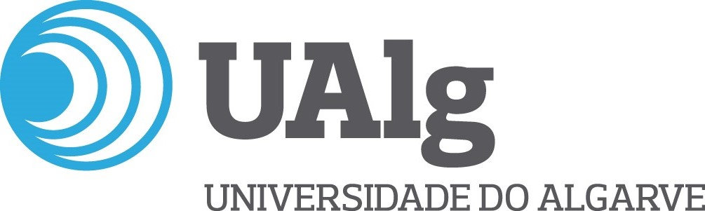

10+ years leading complex technology initiatives with structure, clarity, and reliable delivery
I’m a Senior Project & Delivery Manager focused on turning complex change into clear, structured delivery. I lead multi-stream technology initiatives end-to-end, align stakeholders, strengthen governance, and enable cross-functional teams to deliver meaningful business outcomes. My approach is grounded in clarity, collaboration, and steady execution, especially where priorities are complex and delivery needs to stay on track.
Delivered a native Bet Builder feature within the core platform, enabling multi-selection bets and significantly enhancing user engagement and betting flexibility
Launched a standalone Bet Builder product, creating new commercial opportunities and enabling partner integrations beyond the core platform
Extended the range of sports and market types available to customers, increasing product depth and enhancing engagement across key regulated markets
Introduced a new data warehouse solution for clients, providing centralised access to operational and betting data for custom analytics and reporting
Deployed a customer-facing business intelligence platform with configurable dashboards, enabling users to track key performance metrics and gain actionable insights
Led the full delivery of an automated pension submissions platform, streamlining compliance for payroll providers via direct integration with UK pension schemes and auto-enrolment workflows
Delivered continuous platform improvements across backend, UX, and configuration layers, increasing stability, usability, and client satisfaction
Led technology upgrades across platform components, improving system performance, security, and long-term maintainability
Managed platform migrations, ensuring seamless client transitions with minimal disruption and full regulatory compliance.
Executed infrastructure separation during company divestiture, ensuring service continuity, system stability, and successful transition to independent operations
Migrated internal and client JIRA environments to Atlassian Cloud, improving availability, scalability, and reducing operational overhead
Provided day-to-day support, monitoring, and system maintenance for clients, ensuring high availability, SLA adherence, and consistent operational performance
Managed end-to-end delivery of client change requests, aligning business needs with technical solutions while maintaining quality and timelines
Integrated third-party services (e.g. payments, verification), enabling compliance with regulatory requirements and supporting operational scalability
Delivered integrations with UK pension providers, streamlining payroll workflows and ensuring regulatory compliance
Delivered a native Bet Builder feature within the core platform, enabling multi-selection bets and significantly enhancing user engagement and betting flexibility
Launched a standalone Bet Builder product, creating new commercial opportunities and enabling partner integrations beyond the core platform
Extended the range of sports and market types available to customers, increasing product depth and enhancing engagement across key regulated markets
Introduced a new data warehouse solution for clients, providing centralised access to operational and betting data for custom analytics and reporting
Deployed a customer-facing business intelligence platform with configurable dashboards, enabling users to track key performance metrics and gain actionable insights
Led the full delivery of an automated pension submissions platform, streamlining compliance for payroll providers via direct integration with UK pension schemes and auto-enrolment workflows
Delivered continuous platform improvements across backend, UX, and configuration layers, increasing stability, usability, and client satisfaction
Led technology upgrades across platform components, improving system performance, security, and long-term maintainability
Managed platform migrations, ensuring seamless client transitions with minimal disruption and full regulatory compliance.
Executed infrastructure separation during company divestiture, ensuring service continuity, system stability, and successful transition to independent operations
Migrated internal and client JIRA environments to Atlassian Cloud, improving availability, scalability, and reducing operational overhead
Provided day-to-day support, monitoring, and system maintenance for clients, ensuring high availability, SLA adherence, and consistent operational performance
Managed end-to-end delivery of client change requests, aligning business needs with technical solutions while maintaining quality and timelines
Integrated third-party services (e.g. payments, verification), enabling compliance with regulatory requirements and supporting operational scalability
Delivered integrations with UK pension providers, streamlining payroll workflows and ensuring regulatory compliance
For a complete overview of my experience, download my CV
Download CV
University of Algarve
University of Algarve
Always happy to connect and talk about project management, leadership, and delivering meaningful change.